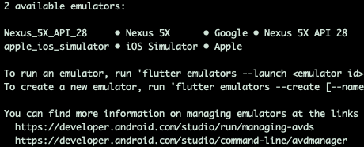
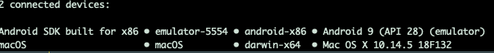
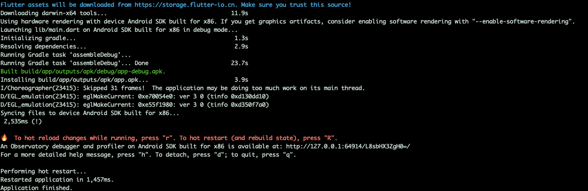
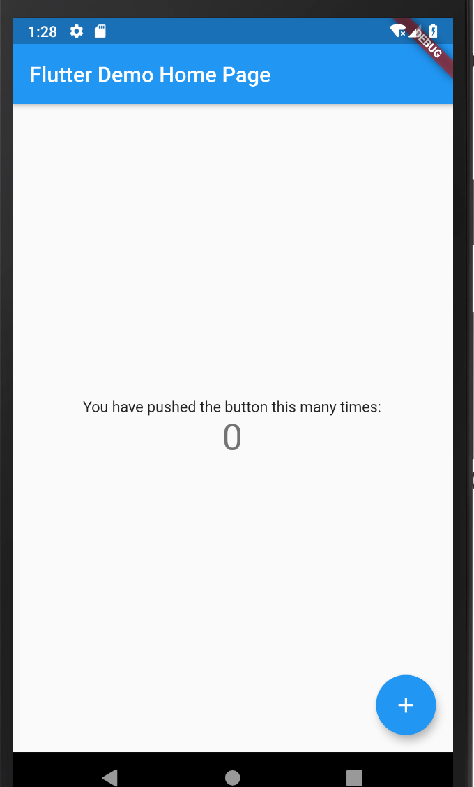
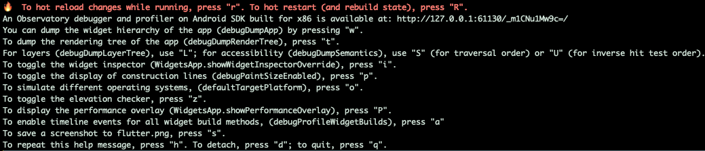

<!DOCTYPE html>
<html lang="en">

<head><meta name="generator" content="Hexo 3.9.0">
  <meta charset="utf-8">
    
  <meta name="viewport" content="width=device-width, initial-scale=1, maximum-scale=1">
  <title>
    官方示例 &amp; 代码解读 |  MonkeyInWind
  </title>
  
  <link rel="shortcut icon" href="/favicon.ico">
  
  <link rel="stylesheet" href="/css/style.css">
  <script src="/js/pace.min.js"></script>

  

<script type="text/javascript">
(function(i,s,o,g,r,a,m){i['GoogleAnalyticsObject']=r;i[r]=i[r]||function(){
(i[r].q=i[r].q||[]).push(arguments)},i[r].l=1*new Date();a=s.createElement(o),
m=s.getElementsByTagName(o)[0];a.async=1;a.src=g;m.parentNode.insertBefore(a,m)
})(window,document,'script','//www.google-analytics.com/analytics.js','ga');

ga('create', 'UA-155359064-1', 'auto');
ga('send', 'pageview');

</script>


  

</head>

</html>

<body>
  <div id="app">
    <main class="content">
      <section class="outer">
  <article id="post-flutterOfficialExample" class="article article-type-post" itemscope
  itemprop="blogPost" data-scroll-reveal>

  <div class="article-inner">
    
    <header class="article-header">
       
<h1 class="article-title sea-center" style="border-left:0" itemprop="name">
  官方示例 &amp; 代码解读
</h1>
  

    </header>
    

    
    <div class="article-meta">
      <a href="/post/flutterOfficialExample/" class="article-date">
  <time datetime="2020-01-04T16:00:00.000Z" itemprop="datePublished">2020-01-05</time>
</a>
      
    </div>
    

    
    


    

    <div class="article-entry" itemprop="articleBody">
      


      

      
      <p>语法的东西就不详细说了，可以看官方文档了解一下<a href="https://www.dartcn.com/" target="_blank" rel="noopener">https://www.dartcn.com/</a>，学习过程中也会介绍一些。</p>
<a id="more"></a>
<p>环境搭好，怎么搭看官网，很详细，并且为中国用户提供了解决方案</p>
<figure class="highlight plain"><table><tr><td class="gutter"><pre><span class="line">1</span><br></pre></td><td class="code"><pre><span class="line">flutter help</span><br></pre></td></tr></table></figure>

<p>可以看见官方提供的命令。接下来创建个项目：</p>
<figure class="highlight plain"><table><tr><td class="gutter"><pre><span class="line">1</span><br></pre></td><td class="code"><pre><span class="line">flutter create mypp</span><br></pre></td></tr></table></figure>

<p>创建好之后进入<code>myapp</code>先看一下模拟器（android stidio里边自己下）</p>
<figure class="highlight plain"><table><tr><td class="gutter"><pre><span class="line">1</span><br></pre></td><td class="code"><pre><span class="line">➜  myapp flutter emulators    //查看可用的模拟器</span><br></pre></td></tr></table></figure>

<p><br>我这里有两个，运行android模拟器</p>
<figure class="highlight plain"><table><tr><td class="gutter"><pre><span class="line">1</span><br></pre></td><td class="code"><pre><span class="line">➜ flutter emulators --launch Nexus_5X_API_28</span><br></pre></td></tr></table></figure>

<p>模拟器跑起来之后，查看一下可用设备</p>
<figure class="highlight plain"><table><tr><td class="gutter"><pre><span class="line">1</span><br></pre></td><td class="code"><pre><span class="line">flutter devices</span><br></pre></td></tr></table></figure>

<p><br>接下来把项目跑起来</p>
<figure class="highlight plain"><table><tr><td class="gutter"><pre><span class="line">1</span><br><span class="line">2</span><br><span class="line">3</span><br><span class="line">4</span><br></pre></td><td class="code"><pre><span class="line">//只有一个可用设备</span><br><span class="line">flutter run</span><br><span class="line">//如果有多个设备需要指定id</span><br><span class="line">flutter run -d emulator-5554</span><br></pre></td></tr></table></figure>

<p></p>
<p><br>可以看到项目已经跑起来了<br>命令直接按<code>r</code>热重载，<code>R</code>重启项目。<br>按<code>h</code>可以查看更多命令。<br><br>我们来看一下代码。</p>
<figure class="highlight plain"><table><tr><td class="gutter"><pre><span class="line">1</span><br><span class="line">2</span><br><span class="line">3</span><br><span class="line">4</span><br><span class="line">5</span><br><span class="line">6</span><br><span class="line">7</span><br><span class="line">8</span><br><span class="line">9</span><br><span class="line">10</span><br><span class="line">11</span><br><span class="line">12</span><br><span class="line">13</span><br><span class="line">14</span><br><span class="line">15</span><br><span class="line">16</span><br><span class="line">17</span><br><span class="line">18</span><br><span class="line">19</span><br><span class="line">20</span><br><span class="line">21</span><br><span class="line">22</span><br><span class="line">23</span><br><span class="line">24</span><br><span class="line">25</span><br><span class="line">26</span><br><span class="line">27</span><br><span class="line">28</span><br><span class="line">29</span><br><span class="line">30</span><br><span class="line">31</span><br><span class="line">32</span><br><span class="line">33</span><br><span class="line">34</span><br><span class="line">35</span><br><span class="line">36</span><br><span class="line">37</span><br><span class="line">38</span><br><span class="line">39</span><br><span class="line">40</span><br><span class="line">41</span><br><span class="line">42</span><br><span class="line">43</span><br><span class="line">44</span><br><span class="line">45</span><br><span class="line">46</span><br><span class="line">47</span><br><span class="line">48</span><br><span class="line">49</span><br><span class="line">50</span><br><span class="line">51</span><br><span class="line">52</span><br><span class="line">53</span><br><span class="line">54</span><br><span class="line">55</span><br><span class="line">56</span><br><span class="line">57</span><br><span class="line">58</span><br><span class="line">59</span><br><span class="line">60</span><br><span class="line">61</span><br><span class="line">62</span><br><span class="line">63</span><br><span class="line">64</span><br><span class="line">65</span><br><span class="line">66</span><br><span class="line">67</span><br><span class="line">68</span><br><span class="line">69</span><br><span class="line">70</span><br><span class="line">71</span><br><span class="line">72</span><br><span class="line">73</span><br><span class="line">74</span><br><span class="line">75</span><br><span class="line">76</span><br><span class="line">77</span><br><span class="line">78</span><br><span class="line">79</span><br><span class="line">80</span><br><span class="line">81</span><br><span class="line">82</span><br><span class="line">83</span><br><span class="line">84</span><br><span class="line">85</span><br><span class="line">86</span><br><span class="line">87</span><br></pre></td><td class="code"><pre><span class="line">import &apos;package:flutter/material.dart&apos;;  //引入material风格的ui库</span><br><span class="line"></span><br><span class="line">//每个dart项目都要有一个main函数</span><br><span class="line">//void表示空类型，写到函数前边代表这个函数没有返回值</span><br><span class="line">//这里用了dart语法的箭头函数</span><br><span class="line">void main() =&gt; runApp(MyApp());</span><br><span class="line"></span><br><span class="line">//main函数跑的MyApp在这里定义  继承了无状态Widget（相当于react的组件）</span><br><span class="line">class MyApp extends StatelessWidget &#123;</span><br><span class="line">  @override    //@元数据  为代码添加额外的信息  @override代表下边这个是一个覆写超类的函数</span><br><span class="line">  Widget build(BuildContext context) &#123;</span><br><span class="line">    return MaterialApp(</span><br><span class="line">      title: &apos;Flutter Demo&apos;,</span><br><span class="line">      //app的主题</span><br><span class="line">      theme: ThemeData(</span><br><span class="line">        //这里给了蓝色，可以改成red、green、yellow等其他颜色然后在命令行按r看一下效果</span><br><span class="line">        primarySwatch: Colors.blue,</span><br><span class="line">      ),</span><br><span class="line">      //路由主页</span><br><span class="line">      home: MyHomePage(title: &apos;Flutter Demo Home Page&apos;),</span><br><span class="line">    );</span><br><span class="line">  &#125;</span><br><span class="line">&#125;</span><br><span class="line"></span><br><span class="line">//创建主页  这是一个有状态组件</span><br><span class="line">class MyHomePage extends StatefulWidget &#123;</span><br><span class="line">  //接收一个参数title</span><br><span class="line">  MyHomePage(&#123;Key key, this.title&#125;) : super(key: key);</span><br><span class="line">  final String title;</span><br><span class="line">  //有状态组件还需要一个State类</span><br><span class="line">  @override</span><br><span class="line">  _MyHomePageState createState() =&gt; _MyHomePageState();</span><br><span class="line">&#125;</span><br><span class="line"></span><br><span class="line">//有状态组件的State类</span><br><span class="line">class _MyHomePageState extends State&lt;MyHomePage&gt; &#123;</span><br><span class="line">  //状态</span><br><span class="line">  int _counter = 0;</span><br><span class="line">  //声明一个改变状态的函数</span><br><span class="line">  void _incrementCounter() &#123;</span><br><span class="line">    //和react的setState作用一样</span><br><span class="line">    setState(() &#123;</span><br><span class="line">      _counter++;</span><br><span class="line">    &#125;);</span><br><span class="line">  &#125;</span><br><span class="line"></span><br><span class="line">  @override</span><br><span class="line">  Widget build(BuildContext context) &#123;</span><br><span class="line">    //这里有个Scaffold组件，先不用管干啥的，介绍组件的时候会详细介绍</span><br><span class="line">    return Scaffold(</span><br><span class="line">      //主页的标题栏</span><br><span class="line">      appBar: AppBar(</span><br><span class="line">        //传入的title</span><br><span class="line">        title: Text(widget.title),</span><br><span class="line">      ),</span><br><span class="line">      //主页内容，Center组件里边的内容水平垂直居中，以后再详细介绍</span><br><span class="line">      body: Center(</span><br><span class="line">        //Column的子组件垂直排列</span><br><span class="line">        child: Column(</span><br><span class="line">          //主轴上的对其方式，这里是居中</span><br><span class="line">          mainAxisAlignment: MainAxisAlignment.center,</span><br><span class="line">          //多个子组件用children，单个子组件用child（有child的组件，不一定有children，有的组件只可以有一个子组件）</span><br><span class="line">          //这里是一个泛型数组里只能放Widget</span><br><span class="line">          children: &lt;Widget&gt;[</span><br><span class="line">            //文本组件，可以设置文字样式</span><br><span class="line">            Text(</span><br><span class="line">              &apos;You have pushed the button this many times:&apos;,</span><br><span class="line">            ),</span><br><span class="line">            Text(</span><br><span class="line">              //相当于js里边的`$&#123;_counter&#125;`</span><br><span class="line">              &apos;$_counter&apos;,</span><br><span class="line">              //文本样式</span><br><span class="line">              style: Theme.of(context).textTheme.display1,</span><br><span class="line">            ),</span><br><span class="line">          ],</span><br><span class="line">        ),</span><br><span class="line">      ),</span><br><span class="line">      //ui库提供的浮动按钮</span><br><span class="line">      floatingActionButton: FloatingActionButton(</span><br><span class="line">        onPressed: _incrementCounter,</span><br><span class="line">        //长按提示</span><br><span class="line">        tooltip: &apos;Increment&apos;,</span><br><span class="line">        child: Icon(Icons.add),</span><br><span class="line">      ),</span><br><span class="line">    );</span><br><span class="line">  &#125;</span><br><span class="line">&#125;</span><br></pre></td></tr></table></figure>

<p>差不多就这些东西吧，详细的东西放到后边，这里先介绍一下结构。</p>

      
      <!-- 打赏 -->
      
    </div>
    <footer class="article-footer">
      <!-- 
      <a data-url="http://yoursite.com/post/flutterOfficialExample/" data-id="ck50z6kcr0008zphs7yuscjga"
        class="article-share-link">分享</a>
      
       -->
    </footer>

  </div>

  
  
  <nav class="article-nav">
    
      <a href="/post/flutterTextWidget/" class="article-nav-link">
        <strong class="article-nav-caption">上一篇</strong>
        <div class="article-nav-title">
          
            hello world和文本组件Text、TextSpan
          
        </div>
      </a>
    
    
      <a href="/post/petalsFluttered/" class="article-nav-link">
        <strong class="article-nav-caption">下一篇</strong>
        <div class="article-nav-title">花瓣飘落效果</div>
      </a>
    
  </nav>


  

  
  
<!-- valine评论 -->
<div id="vcomments-box">
    <div id="vcomments">
    </div>
</div>
<script src="//cdn1.lncld.net/static/js/3.0.4/av-min.js"></script>
<script src='https://cdn.jsdelivr.net/npm/valine@1.3.10/dist/Valine.min.js'></script>
<script>
    new Valine({
        el: '#vcomments',
        notify: false,
        verify: false,
        app_id: '',
        app_key: '',
        path: window.location.pathname,
        avatar: 'mp',
        placeholder: '给我的文章加点评论吧~',
        recordIP: true
    });
    const infoEle = document.querySelector('#vcomments .info');
    if (infoEle && infoEle.childNodes && infoEle.childNodes.length > 0) {
        infoEle.childNodes.forEach(function (item) {
            item.parentNode.removeChild(item);
        });
    }
</script>
<style>
    #vcomments-box {
        padding: 5px 30px;
    }

    @media screen and (max-width: 800px) {
        #vcomments-box {
            padding: 5px 0px;
        }
    }

    #vcomments-box #vcomments {
        background-color: #fff;
    }

    .v .vlist .vcard .vh {
        padding-right: 20px;
    }

    .v .vlist .vcard {
        padding-left: 10px;
    }
</style>

  

  
  
  

</article>

</section>
      <footer class="footer">
  <div class="outer">
    <ul class="list-inline">
      <li>
        &copy;
        2020-01
        MonkeyInWind
      </li>
      <li>
        <!--
        
          Power by
        
        
        <a href="https://hexo.io" target="_blank">Hexo</a> Theme <a href="https://github.com/Shen-Yu/hexo-theme-ayer" target="_blank">Ayer</a>
        
        -->
        <a target="_blank" href='https://github.com/MonkeyInWind'>GitHub</a>
      </li>
    </ul>
    <ul class="list-inline">
      <li>
        
      </li>
      <li>
        <!-- cnzz统计 -->
        
      </li>
    </ul>
  </div>
</footer>

    <div class="to_top">
        <div class="totop" id="totop">
  <i class="ri-arrow-up-line"></i>
</div>
      </div>
    </main>
    
    <aside class="sidebar">
      
        <button class="navbar-toggle"></button>
<nav class="navbar">
  
  <div class="logo">
    <a href="/"></a>
  </div>
  
  <ul class="nav nav-main">
    
    <li class="nav-item">
      <a class="nav-item-link" href="/">主页</a>
    </li>
    
    <li class="nav-item">
      <a class="nav-item-link" href="/archives">目录</a>
    </li>
    
    <li class="nav-item">
      <a class="nav-item-link" href="/Categories">分类</a>
    </li>
    
    <li class="nav-item">
      <a class="nav-item-link" href="/About">关于我</a>
    </li>
    
  </ul>
</nav>
<nav class="navbar navbar-bottom">
  <ul class="nav">
    <li class="nav-item">
      
      <a class="nav-item-link nav-item-search"  title="Search">
        <i class="ri-search-line"></i>
      </a>
      
      
    </li>
  </ul>
</nav>
<div class="search-form-wrap">
  <div class="local-search local-search-plugin">
  <input type="search" id="local-search-input" class="local-search-input" placeholder="Search...">
  <div id="local-search-result" class="local-search-result"></div>
</div>
</div>
      </aside>
      <div id="mask"></div>

<!-- #reward -->
<div id="reward">
  <span class="close"><i class="ri-close-line"></i></span>
  <p class="reward-p"><i class="ri-cup-line"></i>请我喝杯咖啡吧~</p>
  <div class="reward-box">
    
    
  </div>
</div>
      <script src="/js/jquery-2.0.3.min.js"></script>
<script src="/js/jquery.justifiedGallery.min.js"></script>
<script src="/js/lazyload.min.js"></script>
<script src="/js/busuanzi-2.3.pure.min.js"></script>

  <script src="/fancybox/jquery.fancybox.min.js"></script>


  <script src="/js/tocbot.min.js"></script>
  <script>
    // Tocbot_v4.7.0  http://tscanlin.github.io/tocbot/
    tocbot.init({
      tocSelector: '.tocbot',
      contentSelector: '.article-entry',
      headingSelector: 'h1, h2, h3, h4, h5, h6',
      hasInnerContainers: true,
      scrollSmooth: true,
      positionFixedSelector: '.tocbot',
      positionFixedClass: 'is-position-fixed',
      fixedSidebarOffset: 'auto',
    });
  </script>


<script>
  var ayerConfig = {
    mathjax: false
  }
</script>

<script src="/js/ayer.js"></script>

<script src="https://cdn.jsdelivr.net/npm/jquery-modal@0.9.2/jquery.modal.min.js"></script>
<link rel="stylesheet" href="https://cdn.jsdelivr.net/npm/jquery-modal@0.9.2/jquery.modal.min.css">


<script type="text/javascript" src="https://js.users.51.la/20544303.js"></script>
  
  
  </div>
</body>

</html>